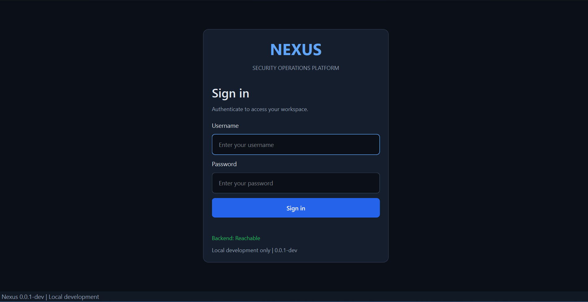
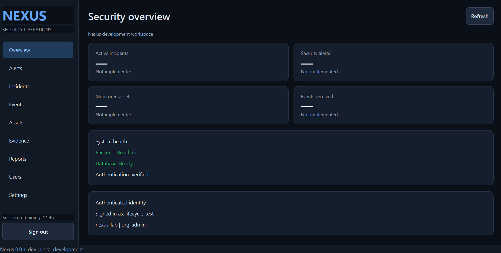
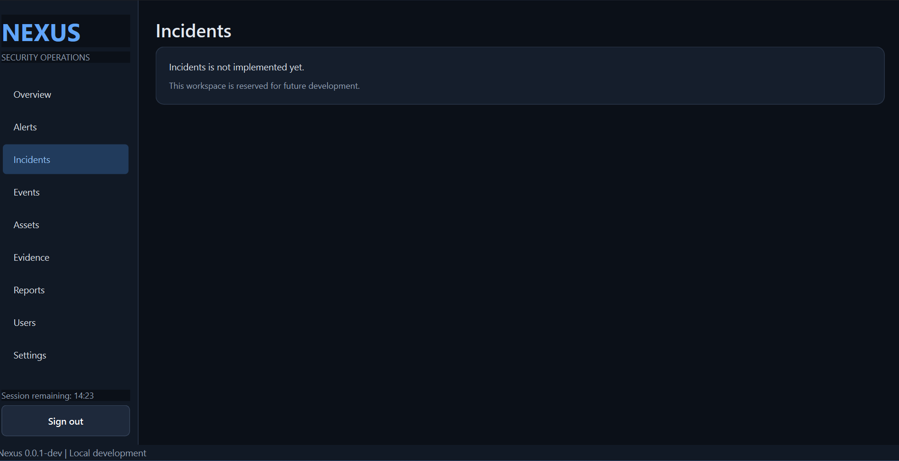

I learn by building projects, working through
technical problems, and documenting my progress.
My current focus is secure application development,
backend systems, and cybersecurity engineering.
I'm developing my skills through hands-on experience
and independent study.
My approach emphasizes structured development,
security by design, automated testing,
documentation, and continuous improvement.
Projects
IN DEVELOPMENT
Nexus
Independent cybersecurity software project
— Version 0.0.1-dev
Nexus is an independent cybersecurity platform
in development. The project combines a native
Windows desktop application with a centralized
backend and persistent database.
Its long-term objective is to support security
telemetry analysis, threat detection, incident
investigation, evidence management, and
human-led incident response.
80Passing automated tests
7Implemented API endpoints
5Database migrations
5Merged pull requests
10Initial planning documents
$0Additional development cost
Desktop application showcase
These screenshots show the actual Nexus desktop
application running in its local development
environment. They are not conceptual mockups.

Figure 1 — Native graphical login
interface connected to the local Nexus
authentication backend.

Figure 2 — Authenticated dashboard
displaying live backend connectivity,
database readiness, laboratory account
information, and session status.
Security monitoring modules remain
under development.

Figure 3 — Modular navigation
architecture with dedicated workspaces
for future cybersecurity capabilities.
The incident investigation module is
currently a development placeholder.
Unit 0: Project planning and infrastructure
— Initial foundation completed
Unit 1: Application foundation
— Implemented
Unit 2: Backend and database foundation
— Implemented
Unit 3: Initial identity and access management
— Implemented
Unit 4: Native Windows graphical interface
— Implemented
Unit 5: Security telemetry ingestion
— Upcoming
Unit 6: Event normalization and storage
— Planned
Unit 7: Threat detection engine
— Planned
Unit 8: Alert management
— Planned
Unit 9: Incident investigation
— Planned
Unit 10: Evidence management
— Planned
Unit 11: Incident response
— Planned
Unit 12: Nexus Guardian
— Planned
Unit 13: Platform integration
— Planned
Unit 14: Security hardening
— Planned
Unit 15: Deployment and distribution
— Planned
Current stage:
The native Windows graphical application
foundation has been implemented and merged.
Nexus can authenticate users, retrieve
organization memberships, and display
live infrastructure status through its
graphical interface.
Next stage:
Security telemetry ingestion, beginning
with controlled synthetic or authorized
laboratory event data.
Upcoming milestone:
Security event normalization, persistent
event storage, search capabilities, and
an initial threat detection engine.
Last development update: November 27, 2026.
Nexus remains a private, local development
prototype. Its authentication and initial
organization permission checks do not establish
comprehensive tenant isolation or production
security.
Production TLS, multi-factor authentication,
durable security audit logging, enterprise
identity integration, security telemetry
ingestion, threat detection, incident
investigation, evidence management, and secure
software distribution remain future work.
Some live security integration checks remain
outstanding.
Nexus is not intended for production deployment
or the processing of real customer security data.
Today I reached a major development milestone:
Nexus now runs as a native Windows desktop
application rather than exclusively through
command-line utilities.
I implemented the graphical interface using
PySide6 and Qt Widgets. The application
includes a dark visual design system, a
graphical login screen, and an authenticated
security operations dashboard.
I connected the graphical client to the
existing FastAPI backend using asynchronous
Qt network requests. This allows the interface
to communicate with the backend without
blocking the main graphical event loop.
I successfully authenticated through the
graphical interface using a disposable
laboratory account. The application retrieved
the authenticated identity and organization
membership information and displayed live
backend connectivity and database readiness.
The dashboard includes nine navigation
workspaces. Future cybersecurity modules
are clearly labeled as unfinished rather
than displaying fabricated security
monitoring statistics.
Security considerations included masked
password input, clearing the password field
after submission, in-memory session tokens,
bounded network timeouts, session expiration,
and separation between the graphical client
and database credentials.
I added 18 automated graphical interface
tests, expanding the complete regression
test suite from 62 to 80 passing tests.
The graphical interface foundation was
merged through the project's fifth pull
request.
The automated GUI tests use mocked network
operations. Additional live integration
validation and production security work
remain necessary.
My next objective is developing the security
telemetry ingestion foundation so Nexus can
begin processing controlled security event
data.
Nexus: Authentication and access enforcement
I extended the identity foundation with a
local authentication API, temporary sessions,
logout, and organization-specific administrator
permission checks.
The authentication service uses a separate
restricted database account. Session tokens
are randomly generated and represented by
hashes in server memory.
I implemented session expiration and account
version checks to support session invalidation
when account status or password information
changes.
The automated test suite expanded from 47 to
62 passing tests. These tests cover invalid
credentials, inactive accounts, expired
sessions, revoked sessions, organization
permissions, and authentication throttling.
I successfully tested authentication against
the running backend and PostgreSQL database.
A disposable administrator account received
access to its own organization while access
to another organization was denied.
After logging out, I verified that the
previously issued session was rejected.
During integration testing, I encountered
a port conflict caused by starting a second
backend instance. I resolved the conflict
by continuing with a single local backend.
This milestone establishes the initial
authentication and access management
foundation for the future desktop application.
It does not constitute a complete production
identity management system.
Nexus: Identity and account management
After completing the initial database
foundation, I began developing the identity
management components of Nexus.
I created database structures for user accounts
and organization memberships. These structures
establish the foundation for managing identities
and organization-specific roles.
I implemented salted password hashing,
password verification, and password length
validation. Automated tests verify correct
and incorrect passwords, unique salts,
invalid stored hashes, and password
length restrictions.
I also developed a restricted administrative
provisioning tool that creates user accounts
and assigns organization memberships.
Newly provisioned accounts are inactive
by default.
Rather than allowing one database account
to control every operation, I separated
responsibilities between database migrations,
application operations, account provisioning,
and account lifecycle management.
I verified column-level database permissions
to confirm that the account lifecycle operator
can manage account status without receiving
permission to read or modify password hashes,
create users, or delete user accounts.
The automated test suite expanded from
27 to 47 tests, all of which passed.
I also verified account provisioning,
organization membership records, and account
status retrieval against the local PostgreSQL
database.
These changes establish an initial identity
management foundation, but do not yet
provide complete authentication or
organization-level authorization.
My next objective is implementing the
authentication and access enforcement
components before connecting user identities
to the future desktop interface.
Nexus: Database integration
I connected Nexus to PostgreSQL today using
SQLAlchemy. The application can now save and
retrieve organization records instead of relying
entirely on temporary application data.
The original database driver failed to load
because of a Windows application control policy.
I switched to a compatible Python driver rather
than disabling the existing security policy.
I also configured restricted database accounts
and introduced Alembic migrations to manage
changes to the database structure.
The backend can now distinguish between being
online and being ready to communicate with its
database. I tested the live API endpoints and
expanded the automated test suite from 18 to
27 tests, all of which passed.
My next objective is implementing authentication
and access controls before introducing features
that handle sensitive security data.
Nexus: First working backend
I built the initial Nexus backend using FastAPI
and connected it to the existing Python console.
The two applications can now communicate locally
through an HTTP API.
I tested what happens when the server becomes
unavailable. The client reported the connection
failure and continued running instead of crashing.
I also added configurable server startup and
expanded the automated test suite from four
tests to eighteen. All eighteen passed.
My next step is learning database integration
so Nexus can begin storing application data.
Nexus: Application foundations
I finished the initial Python application
foundation for Nexus. The application can
accept basic commands, record its activity,
read local settings, and handle certain errors
without crashing.
I ran into several Python import errors while
organizing the project files. I traced the
problem back to the directory structure,
corrected it, and successfully ran the application.
I also introduced automated testing and started
using Git feature branches to separate new
development from the main project.
All four initial automated tests passed.
Starting Nexus
I configured two development workstations,
established a private Git repository,
tested backup restoration, and completed
the initial project planning documents.
I decided to establish the project requirements
and security boundaries before writing application
code. This gives me a clear direction while
leaving room to improve the design as I learn.